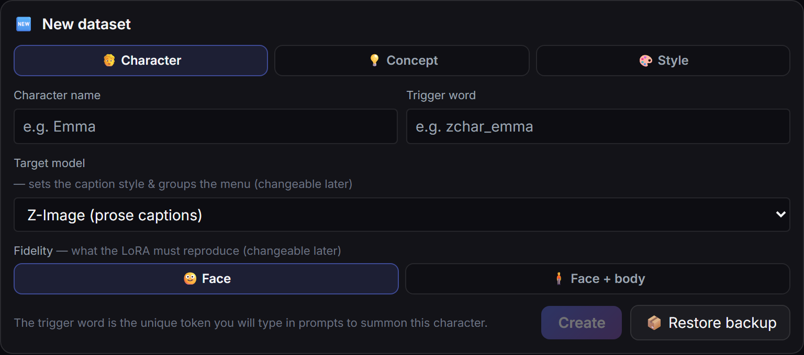
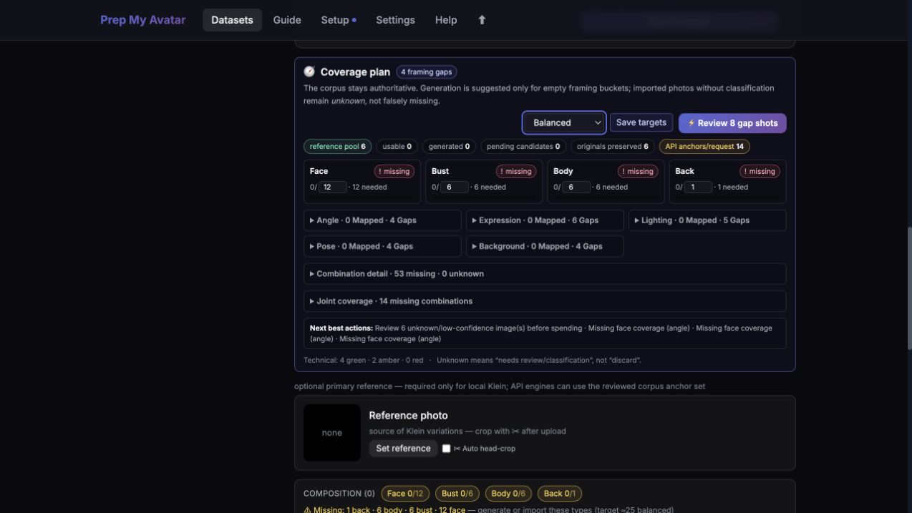
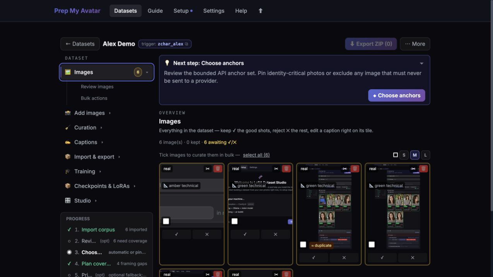
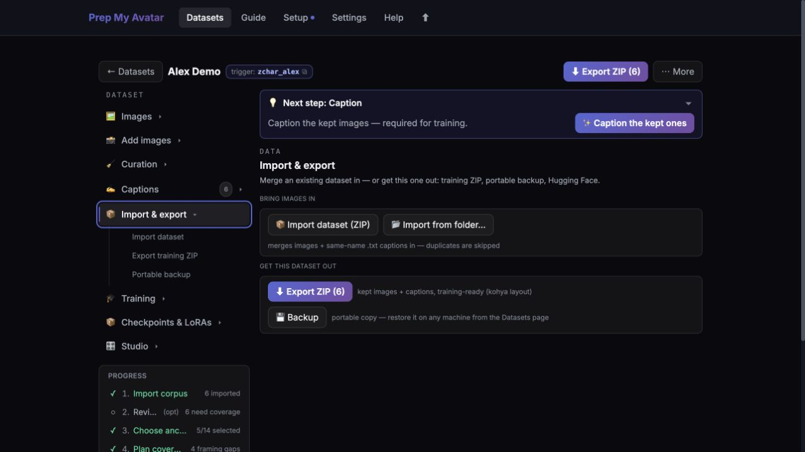

source .venv/bin/activate
python data/source-launcher.py --root . --data-dir data
Then open http://127.0.0.1:5050/. Keep the terminal open while you use the app; press Ctrl+C there to stop it.
The first launch opens the Setup wizard. You can skip optional integrations and start by importing and reviewing your photos.
01 · The repeated problem
You need consistent pictures of the same person: you
The goal is not to “own an avatar.” The goal is to make useful new material featuring your recognisable likeness without rebuilding that likeness for every image, video, or service.
Today
Every request starts again
Your useful photos are scattered, repeated selfies show limited variety, and different image tools can produce a different-looking person each time.
Prepare once
Build reliable evidence of you
Choose five strong photos to begin. Review them, remove weak repeats, and add genuinely different views only when the work you want to make needs them.
Use repeatedly
Create without another shoot
Give those photos directly to a capable model for quick results, or train a reusable likeness when you need many consistent images and more control.
This is for a creator, founder, educator, performer, campaigner, or anyone else who needs to appear repeatedly in visual material but does not want every image to depend on another camera session.
Make yourself present: website portraits, social posts, thumbnails, presentation images, campaign scenes, or visual storytelling.
Keep the likeness recognisable: change the setting, clothes, pose, framing, or style without accidentally creating a different person.
Avoid lock-in where possible: keep a reviewed source set that can be reused as direct references today and as training material later.
“Avatar” is only shorthand for several different solutions
Once the problem is clear, the reusable likeness might be five reference photos, a trained file for one image engine, or an identity held by a video service. There is no universal avatar file that works in Gemini, FLUX, every image generator, and every video service.
02 · What this app can make
Your reusable likeness can take four different forms
Now that the problem is clear, choose the form that matches the material you want to create.
A selected set of reference photos, plus ordinary finished image files
Portraits for a website, social posts, campaign images, thumbnails, or slides
Partly. It prepares the photos and can call supported image services. It does not create a universal account avatar.
Keep making still images with more control
A Character LoRA: a reusable likeness add-on for one image engine
Create many scenes, outfits, poses, and styles in a compatible generator; publish the finished images anywhere ordinary images are accepted
Yes. Train locally or, for supported engines, in the cloud.
Make a talking avatar in Gemini or Google Vids
A face-and-voice personal avatar linked to your Google account
Create supported talking-avatar images and videos inside Google’s products
No. Google creates and stores this through its own enrolment flow.
Take prepared photos to another trainer
A ZIP containing paired photos and descriptions, plus a record of how they were made
Train a reusable image-model add-on elsewhere; the ZIP itself is not something you publish
Yes. Use Export ZIP. It is training material, not a finished avatar.
One useful distinction
You do not publish a LoRA, an API key, or a training ZIP. Those are tools used to create finished pictures or videos. The finished media is what goes on your website, social channels, presentations, campaigns, or other destinations.
03 · Choose your outcome
Start with what you want to make next
If you are unsure, begin with the still-image route. It produces useful photos without committing you to a model family or paid training.
Image generator
A tool that makes a new picture from your instructions and, when supported, reference photos.
Model family
The underlying image engine. A likeness trained for one family normally cannot be used by another—like a plug made for one kind of socket.
LoRA
A relatively small file that teaches one model family about your appearance. It is reusable, but only with compatible tools.
API key
A private access code from an online image service. This app needs one only when you ask it to call that service for you.
ComfyUI
An optional application for running image models on a computer or server you control. You do not need it just to review or export photos.
Outcome A · Lowest commitment
I want believable still images of myself
Use a small group of clear, varied photos as references. A supported image engine can use those photos to make a new image of you in a different scene, outfit, pose, or framing. No LoRA is required.
You receive
Ordinary image files. You can also export the selected source photos and captions as a ZIP.
You reuse it in
This app’s supported online or local image engines—Gemini’s Nano Banana, ChatGPT Images, or local FLUX.2 Klein—or another product that accepts image references.
You need
Five useful photos to try it. For generation inside this app, add a Gemini/OpenAI API key or connect local ComfyUI.
Best when
You want results quickly, you are still exploring, or the destination already accepts reference images.
This is not a persistent avatar. The destination service receives reference images for a request. It may not remember your identity for the next request.
Outcome B · Reusable and controllable
I want a Character LoRA I can load into an image workflow
A LoRA is a reusable likeness attachment for one image engine. You load it with the matching engine, mention your unique nickname when describing the picture, and create new scenes while keeping your appearance. The file ends in .safetensors.
You receive
One or more saved versions of the LoRA, each ending in .safetensors. The app calls those saved versions “checkpoints.”
You reuse it in
A compatible workflow for the same model family, commonly ComfyUI or another tool that loads LoRAs.
You need
Roughly 12–30 accepted photos depending on the family, short descriptions of the photos, and either a suitable graphics card or a supported paid cloud computer.
Best when
You expect to make many images, want control over prompts and strength, or want a portable file you manage yourself.
A LoRA is not universal. A FLUX.1 LoRA must be used with a compatible FLUX.1 base. It cannot be uploaded as a Gemini personal avatar or loaded into an unrelated model family.
Compare the model families this app supports
Choose this family when…
Useful image count
Training route in this app
Where to check the result
Z-Image You want fast iteration with ordinary prose prompts.
12 minimum; about 20+
Local or cloud
In-app Test Studio with ComfyUI
SDXL You already use an SDXL checkpoint or its established ecosystem.
20 minimum; about 30+
Local only
In-app Test Studio with ComfyUI
Krea 2 You prioritise a high realism ceiling and accept a heavier model.
15 minimum; about 20+
Local or cloud
In-app Test Studio with ComfyUI
FLUX.1 You need the broad FLUX.1 LoRA ecosystem and strong prompt following.
15 minimum; about 20+
Local only
Your own compatible ComfyUI workflow
FLUX.2 Klein You want the newer FLUX.2 family; 4B is the lighter route and 9B is heavier.
15 minimum; about 20+
Local or cloud
Your own compatible ComfyUI workflow
The image counts and routes above match the current application rules. Hardware and run time vary by family and machine; Setup checks the capabilities available on yours.
Outcome C · Provider-owned avatar
I want a personal avatar for Gemini Omni or Google Vids
Google’s personal avatar is a separate product for making images and talking videos in supported Google tools. You enrol directly in Gemini with a face recording and a voice recording. Google links the resulting avatar to your account and makes it available in supported Gemini image and video experiences.
You receive
An account-linked Gemini avatar—not a downloadable LoRA or a file created by Prep My Avatar.
You reuse it in
Supported Gemini Apps, Gemini Omni, Nano Banana, and Google Vids experiences.
You need
Google’s own eligibility, subscription, region, age, and language requirements, plus the face-and-voice enrolment Google requests.
This app helps by
Selecting strong still photographs or creating reference images. It does not perform Google’s voice capture or avatar enrolment.
Current availability matters. As of 10 August 2026, Google says personal avatars are 18+, English-only, require an eligible Google AI plan, and are unavailable in the EEA, Switzerland, and the United Kingdom. Check Google’s current personal-avatar requirements ↗ before preparing anything.
I want clean training material I can take elsewhere
Use Export ZIP when another application will do the training. The ZIP contains standard PNG images and matching TXT descriptions, plus a record showing where the images came from and what views they cover.
You receive
A ZIP with image.png / image.txt pairs and _prep_my_avatar_manifest.json.
You reuse it in
ai-toolkit, kohya_ss / sd-scripts, OneTrainer, and similar image-model trainers.
You need
A reviewed set of kept photos and captions. You do not need training installed in this app.
Remember
The ZIP is the material used to make a model. It is not itself an avatar and cannot generate an image until a compatible trainer uses it.
Export ZIP and Backup are different.
Export ZIP is for training elsewhere. Backup preserves the complete Prep My Avatar project—originals, decisions, settings, and relationships—so you can restore it later.
04 · What to bring
The input depends on the output
Five photos are enough to understand the app. They are not enough for every final result.
If you chose…
Bring now
You may need later
Still-image references
At least five clear, varied photos you have permission to use
A Gemini/OpenAI API key, or local ComfyUI, only if this app will make the images
Character LoRA
Five photos to start; plan for the family minimum and preferably 20–30 varied accepted images
The included training software and a suitable graphics card, or account details for a supported cloud computer; a few downloadable models also require a free Hugging Face access token
Gemini personal avatar
Nothing from this app is required for enrolment
A face and voice recording made directly in Gemini, plus Google’s current eligibility
External training pack
Your available photos and permission to use them
Enough accepted images and captions for the model family you will train elsewhere
Your first five photos
Do not hunt for five perfect portraits. Bring five different pieces of evidence of the same current appearance:
A clear, front-facing head-and-shoulders photo
A three-quarter or side angle
A waist-up photo with hands visible if possible
A full-body photo where you are large enough to see clearly
A different expression, outfit, background, or lighting setup
You can start without an API key.
Importing, reviewing, choosing, describing, backing up, and exporting photos do not require an online image-service key. Add a key only if you want this app to generate new images through Gemini or OpenAI.
What makes a useful set of photos?
Keep the person constant and vary everything else: close-up and full-body framing, camera angle, expression, lighting, clothes, pose, and background. Repeated selfies from one session teach the model less than a smaller, varied set.
05 · Why the preparation steps exist
The workflow is evidence → decision → output
Each stage prevents a specific failure. Skip a stage only when your chosen outcome genuinely does not need it.
Choose the destinationGemini enrolment, a FLUX LoRA, and a training ZIP require different outputs. Choosing first prevents preparing the wrong thing.
Import originalsThe app preserves your source photos so later crops, repairs, or generated candidates do not replace the evidence you started with.
Review qualityBlur, duplicates, and tiny faces either weaken a reference request or teach a trained model the wrong lesson.
Check coverage“Coverage” means variety. The plan shows whether the likeness has close, medium, full-body, side, back, lighting, and expression evidence.
Fill real gapsGeneration is optional. Use it only when a missing view matters and taking another real photo is not the better answer.
Choose what counts“Curate” means decide which images become evidence. Imported and generated images do not enter training until you keep them.
Describe each imageCaptions teach the model which details should remain changeable—clothes, pose, location, and lighting—rather than baking them into the person.
Export or trainExport produces inputs for another tool. Training produces the reusable LoRA. A backup preserves the project but is not a generation artifact.
Test saved versionsFor LoRAs, the final saved version is not automatically the best. Testing finds the earliest one that holds the likeness without making your instructions inflexible.
06 · What you will see
The screens, with their purpose
The interface uses technical labels because it supports several outputs. Here is what each screen is asking you to decide.
1. Create a Character project
Decision: the app calls a project about a person a “Character” project. Choose the image engine only if you expect to train a LoRA. The “trigger word” is simply a unique nickname for your likeness; you can change the chosen model family later.

Input: a project name and intended output. Result: an empty workspace for your likeness.
2. See what your photos already cover
Decision: determine whether the existing photographs are varied enough. A missing full-body or side view is evidence to add; an unanalysed image is not automatically a gap.

Input: reviewed photos. Result: a concrete list of useful missing views.
3. Decide which images become evidence
Decision: keep the clear, varied, on-likeness images and reject repeats or mistakes. This choice defines the reference pack or the material used for training.

Input: imported and optional generated candidates. Result: the accepted image set.
4. Take the correct output
Decision: use Export ZIP for another trainer, Backup for restoring this project, or Training for a LoRA .safetensors file.

Export ZIP, Backup, and a trained LoRA solve three different problems.
Still unsure?
Start a Character project with five photos and stop after the coverage review. At that point you will know whether ordinary reference images are enough, whether you need more real photos, or whether a LoRA is worth training. Nothing in those first steps commits you to a provider or model family.